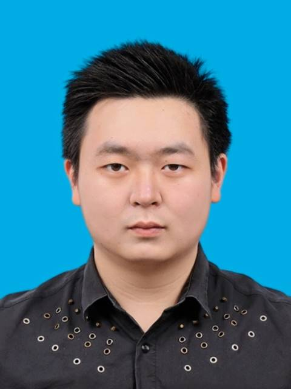
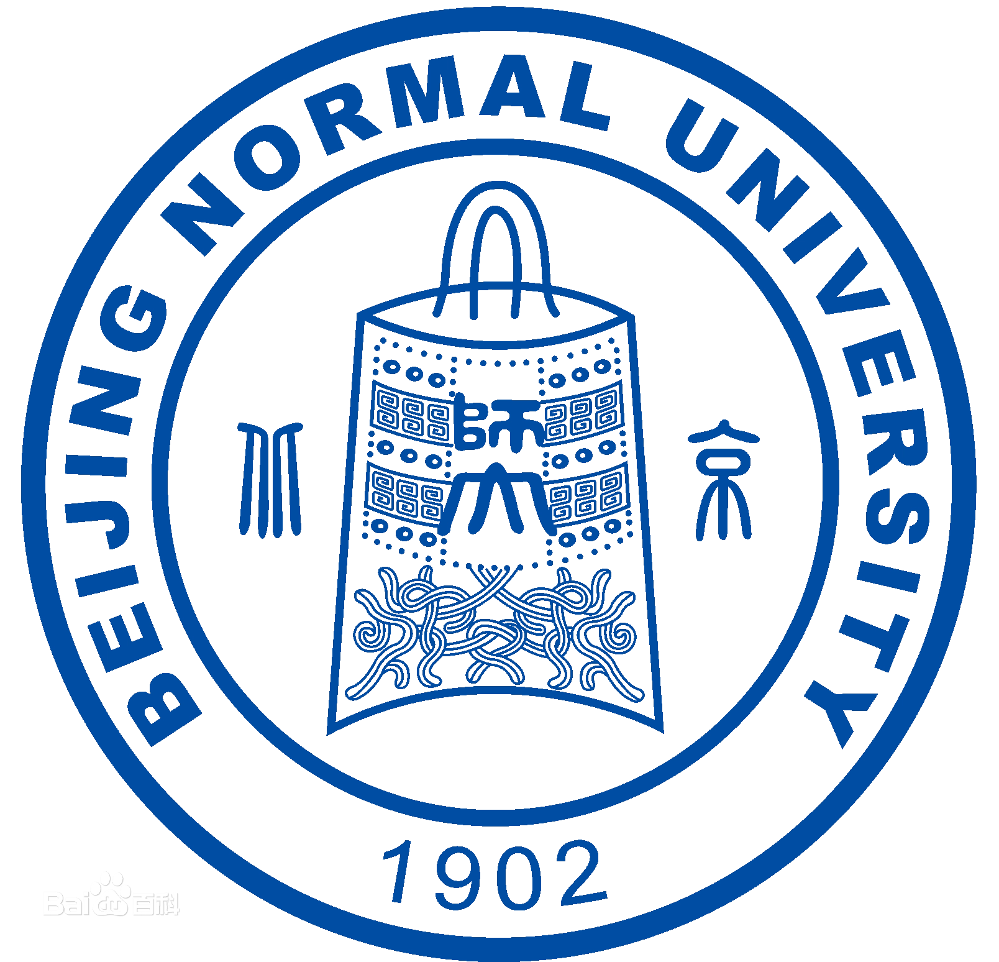

彭科钦 (Keqin Peng)
|  | 手机: +44 7432 164777 / +86 195 2048 2118
关于我
我于2022年7月毕业于北京师范大学 人工智能学院，并取得计算机科学与技术理学学士学位。目前在英国格拉斯哥大学攻读机器人与人工智能硕士
主要研究兴趣包括自然语言处理方法的应用和改进，关注文档级别信息抽取和挖掘。具体研究方向涵盖命名 实体识别、实体关系抽取、事件抽取、文本摘要等。
教育经历

|
格拉斯哥大学 (2024.09 ~ 2025.09)
|
|  |
北京师范大学 (2018.9 ~ 2022.7)
|
学术论文
-
U-Net with depthwise separable convolutions and big kernels for document-level relation extraction
Rongen Yan, Keqin Peng and Depeng Dang
2023 11th Transactions of the Association for Computational Linguistics. [Reviewing]destails
见刊后会为您呈现 -
Document-level relation extraction with less redundant image-style feature
Rongen Yan, Keqin Peng and Depeng Dang
2023 11th Transactions of the Association for Computational Linguistics. [Reviewing]destails
见刊后会为您呈现 -
基于事件结构的多文本摘要生成方法研究
Keqin Peng and Xuesong Wang
北京师范大学毕业论文[PDF]details
- 传统的多文本摘要方法往往存在着丢失文段之间的信息的问题，这限制了传统自动摘要神经网络模型的输 出效果。我们引入分层 Transformer 模型，对排序筛选后的段落进行层次化的连接和编码，提高了输出摘要 的质量。
- 基于 LSTM 模型的排序算法可以计算出段落和输入标题的相关程度，以此作为排序和筛选的依据，提升模 型对于输入规模的承受能力。
- 分层的 Transformer 结构可以分别学习段落内字符和段落之间的上下文信息，刻画事件结构。
- 使用 Beam Search 和长度归一方法来提升输出句子的长度和流畅性。
工作经历
项目开发
- 智能财税系统
- 采用 Python 和 Selenium 技术栈开发自动记账机器人模块，实现网页自动化操作和本地文件处理。
- 参与需求讨论，帮助确定功能覆盖范围和技术选型。
- 设计并实现了自动预处理机器人模块的逻辑，利用 PyPDF2 和 Pandas 处理文档数据，提升自动化程度和数据准确性。
- 数管家系统
- 使用 Java 和 Spring Boot 框架开发配置中心、项目工作台、首页、商务管理等模块，确保系统的高性能和可维护性。
- 参与项目中心模块的逻辑设计，应用 RESTful API 设计理念，确保项目列表和交办事项的高效管理。
- 设计数据库架构，优化查询性能，使用 MySQL 数据库管理系统以支持大量数据的快速存取，并通过 MyBatis 实现高效的 ORM（对象关系映射）。
- 智能财税系统
企业人工智能转型研究
- 设计大模型应用能力理论知识以及实践能力考核流程。
- 撰写公司人工智能发展建议书：分析公司现状和行业竞争态势，挑选合适的技术路线和发展路径；深入分析适合公司的人工智能发展路径、投入规模、产品输出模式和回款周期；起草公司人工智能开发团队的基本开发流程和规范。
NLP 技术研发与应用
- 制作医疗实验文本数据集：收集全球医疗实验各领域实验室的20万篇操作文本；利用NER+RE+keylist混合方法清洗并整理数据，确保格式统一和内容有效；采用小样本预训练与自动标注模型相结合的方式，以较低成本获得高质量的数据集。
- 技术验证与流水线搭建：验证NER、RE、SRL、KG等现有技术，为任务提供可行的技术路径。
- 提出新任务并设计模型：提出从自然语言文本中提取关键步骤流程图的任务，并完成相应模型设计。
- 重新设计端到端模型：针对任务需求优化模型设计，解决错误积累和错误传播的问题。
- 新技术部署与医疗实验室对接。
湖南长沙银行数字科技有限公司
2024.01 ~ 2024.09
职位: 后端开发工程师, 开发一部
清华大学人工智能产业研究院
2022.07 ~ 2023.07
职位: NLP 研发工程师
发明专利
一种文档级关系抽取方法、系统、设备及存储介质
颜荣恩, 彭科钦
国家发明专利, 审核中
其他项目
科研任务发布平台
数据库负责人; 2021.3~2021.5
北京师范大学大学本科生自主探索项目
美国大学生数学建模大赛
编程手; 2021.01-2021.03